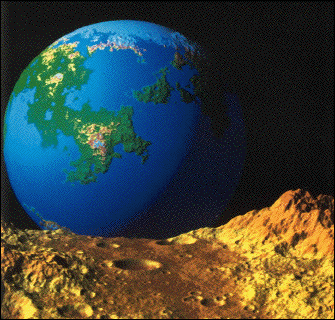

| Visually convincing fractal landscape forgeries were pioneered by
Richard Voss, using variations of Brownian motion and
fractional Brownian motion. Perhaps his most familiar image is
Fractal Planetrise, widely distributed as the back cover illustration of
The Fractal Geometry of Nature.
Click the image to enlarge. |
| Voss generated this fractal planet by adapting to the suface of
a sphere the construction of Brownian motion, a sum of
displacements at uniformly distributed locations and of normally distributed
amplitudes. Voss' program picked great circles with uniformly randomly
distributed poles. The great circles are thought of as geological faults, and
one hemisphere of the great circle is displaced in height from the other. The
height differences are normally distributed, and color is assigned according to
height. Adding oceans and polar caps, a plausible planet emerges after about
10,000 great circle displacements. |
| The moon surface behind which the planet is rising has
a 1/f distribution
of craters. That is, for each number D, the number of craters N(diam > D)
of diameter greater than D
satisfiesN(diam > D) = 1/D. This sort of
power-law distribution often is
associated with fractals, so we speak of this as a fractal distribution of craters. |
|
 |
| In addition, Voss applied
fractional Brownian motion
to construct terrain
syntheses. For regular
Brownian motion,
travelling a distance r will
result in a change in height of √r, on average. Fractional
Brownian motion has an associated roughness
exponent H, 0 < H < 1,
and travelling a distance r in a fractional Brownian motion landscape
will result in a change in height of rH, on average. High H gives
smooth, weathered mountains; low H gives rough, tectonically active
mountains. For surfaces in 3-dimensional space, the
dimension D is
related to the roughness exponent H by D = 3 - H. |
| Here are three examples of fractional Brownian mountains,
with H = 0.85, H = 0.5, and H = 0.2, so d = 2.15, 2.5, and 2.8. respectively. This
illustrates a connecton between roughness and dimension. Click each image
to enlarge. |
|
{kind=link}
{kind=link}
{kind=link}
{kind=link}